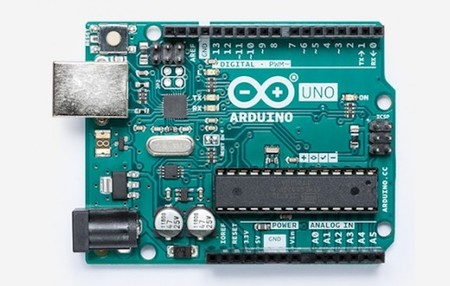

1- El robot GEKKO Solar está diseñado para limpiar paneles fotovoltaicos en tejados
y pequeñas granjas solares. Es compacto y versátil y fácil de transportar de un lugar a otro. Por lo que se adecua perfectamente
a las necesidades de empresas de limpieza, que ofrecen su servicio a los propietarios de plantas fotovoltaicas.
2- La eficacia de los robots alcanza hasta 400 m2 por hora. Es una muy buena opción para
las instalaciones de techo extendido, donde una limpieza a mano es difícilmente factible
3- El robot GEKKO Solar limpia rigurosamente con sus cepillos rotativos y agua desmineralizada,
ejecutando una presión constante sobre los paneles.
4- Por lo general, el sistema de apoyo del robot consiste en una plataforma de elevación,
que coloca al robot en la parte superior del techo, el motor es dirigido a control remoto.
5- El abastecimiento de agua se efectua desde un pequeño carrito con un
polipasto de unos 100m de longitud.
6- GEKKO Solar también es adecuado para pequeñas granjas solares con paneles angostos.
En este caso, un carro de apoyo que suministra agua, energía eléctrica y aire asegura la operación independiente del mismo.
ARDUINO

¿QUÉ ES?
Arduino es una plataforma de creación de electrónica
de código abierto, la cual está basada en hardware y software libre,
flexible y fácil de utilizar para los creadores y desarrolladores. Esta plataforma
permite crear diferentes tipos de microordenadores de una sola placa a los que la comunidad
de creadores puede darles diferentes tipos de uso.
¿CÓMO FUNCIONA ARDUINO?
El Arduino es una placa basada en un microcontrolador ATMEL.
Los microcontroladores son circuitos integrados en los que se pueden grabar
instrucciones, las cuales las escribes con el lenguaje de programación que puedes
utilizar en el entorno Arduino IDE. Estas instrucciones permiten crear programas
que interactúan con los circuitos de la placa.
El microcontrolador de Arduino posee lo que se llama una interfaz de entrada,
que es una conexión en la que podemos conectar en la placa diferentes tipos de periféricos.
La información de estos periféricos que conectes se trasladará al microcontrolador, el cual
se encargará de procesar los datos que le lleguen a través de ellos.
¿CÓMO PODEMOS HACER UNO?
La enorme flexibilidad y el carácter libre y abierto de
Arduino hacen que puedas utilizar este tipo de placas prácticamente para
cualquier cosa, desde relojes hasta básculas conectadas, pasando por robots,
persianas controladas por voz o tu propia vending machine .
EJEMPLOS
S.M.A.R.T Alarm Clock
Un ejemplo lo tenemos en este proyecto en el que podemos sincronizar
de manera automática nuestro calendario de Google o el correo de Gmail para que,
en base a nuestros eventos, el sistema configure una serie de alarmas. Está hecho
conna de las placas más desconocidas del mundo Arduino, la Yún, y una pantalla que
la convierte en reloj digital.
based DIY Vending Machine
Mucho de bricolaje pero también gran cantidad de satisfacción es
lo que nos llevamos si completamos este proyecto para construir una máquina de
vending personal. Tenemos las instrucciones de construcción, montaje y por supuesto
la programación en Arduino.
ROBOT ARM
También existen proyectos como este, en el que se puede crear un brazo
robótico capaz de, tras coger un objeto con unas pinzas, no chocar contra obstáculos
gracias a un sensor de ultrasonidos.